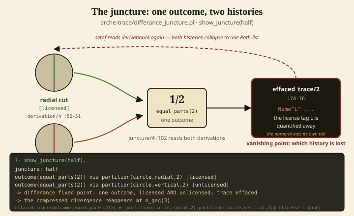
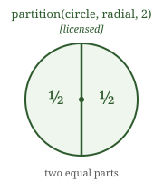
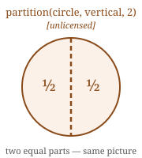
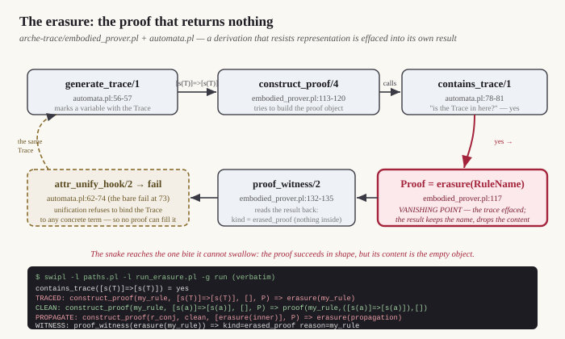
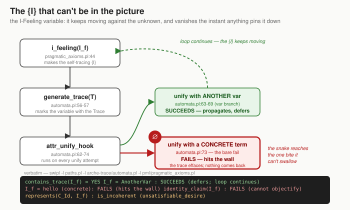
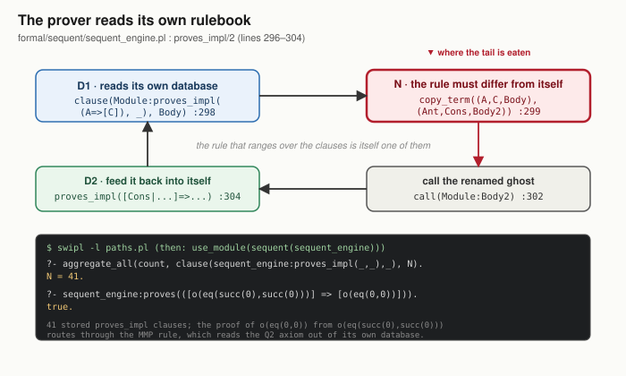
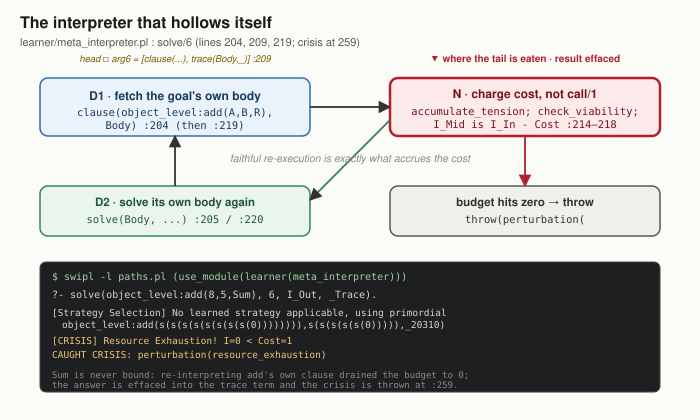
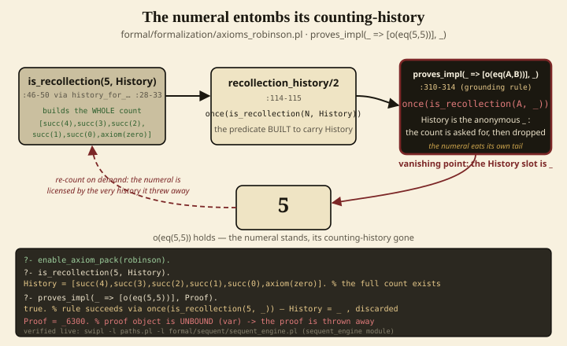
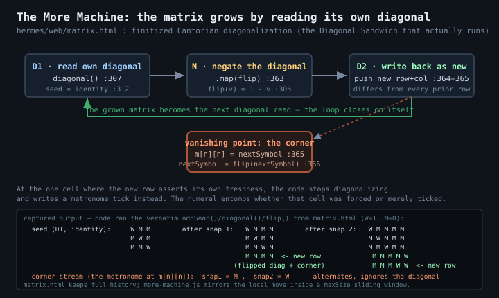

Seven places in the codebase where a procedure loops back onto itself and, at one point, cannot swallow its own tail. A walkthrough for reading without reading the Prolog.
What a fixed point is, in plain words. A fixed point here is a spot where the code turns around and runs over itself: a prover that consults its own rulebook, a counter that counts itself, a grid that grows by reading its own diagonal. Most of the time the loop just goes around again and everything is fine. The interesting thing happens at the one point where the loop tries to swallow the last bite of its own tail and can’t. At that spot the machine still finishes, but it hands back a result that has thrown away how it was made: the proof comes back empty, the variable hits a wall, the counting-history is dropped, the numeral keeps the name and loses the story. That is what these panels show, one loop at a time.
The recurring phrase below is the numeral effaces the trace: a finished result (a number, a proof, a cut piece of pie) discards the steps that produced it. The vanishing point is the extreme case — the place the result returns nothing at all.
Why “fractal.” The same shape shows up at every scale. The hollow proof sits inside the prover that reads its own rulebook; the self-starving interpreter sits inside the learner that goes into crisis; the felt I that can never be pinned down sits underneath all of them. It is the one move — loop back, then fail to close at the last bite — recognized small and recognized large. “Fractal” here means self-similar in structure, the same shape nested at different sizes. It does not mean you can zoom in forever; there are seven named places, not an infinite regress.
Hard rule for this page: no claim without its file:line and a query you can run yourself. Every “captured output” box below is the verbatim result of actually running that query. Nothing is decorative.
Start with the smallest version of the shape. Everything after this is a more elaborate case of it.
the juncture
formal/juncture/differance_juncture.pl:74–76 (effaced_trace/2, the vanishing point); seed at :50–53, :85–87, :102–103, :109–116

This is the snake that catches one outcome with two different bites and can no longer tell which bite was allowed. A circle cut down the middle the licensed way (a radial cut) and a circle cut the unlicensed way (a straight vertical line) both land on the exact same picture: two equal pieces, one-half. The loop is in how the code asks about that picture — to list the histories that produced the outcome it runs setof, and that very query (the Name^L^ part at lines 74–76) quietly drops the tag that said which cut was permitted. So the loop bites its own tail at effaced_trace: it succeeds, it hands back both cutting-histories, but the one thing it was built to keep — which one was the right way — has vanished into the numeral 1/2. The numeral keeps the identity and loses the history; the trace is effaced, and (only because vertical and radial agree at two pieces but split apart at three or more) it matters.
The two cutting-histories, both landing on one-half. At two pieces they coincide — which is exactly why the outcome term can no longer tell them apart:


swipl -q -l paths.pl -l formal/juncture/differance_juncture.pl \ -g 'differance_juncture:show_juncture(half)' -t 'halt'
juncture: half outcome(equal_parts(2)) via partition(circle,radial,2) [licensed] outcome(equal_parts(2)) via partition(circle,vertical,2) [unlicensed] -> différance fixed point: one outcome, licensed AND unlicensed; trace effaced -> the compressed divergence reappears at n_geq(3) (also verified, same load:) fixed_point_half_TRUE effaced_trace(outcome(equal_parts(2))) = [partition(circle,radial,2),partition(circle,vertical,2)]
effaced_trace/2 at formal/juncture/differance_juncture.pl:74–76 — setof(Path, Name^L^derivation(Name, Outcome, Path, L), Paths). The existential quantifier Name^L^ throws away the very license tag L that the rest of the file labors to assert. The predicate built to name the effaced trace performs the effacement in its own quantifier: both the radial [licensed] and vertical [unlicensed] paths come back collapsed into one list, with no record of which was licensed.
The same shape, now at the grain of proof. Nested inside the next loop (the prover reading its own rulebook), this is the bite that comes back empty.
the hollow proof
formal/sequent/embodied_prover.pl (construct_proof/4, proof_witness/2); formal/sequent/automata.pl (generate_vanishing_point/1, attr_unify_hook/2, contains_vanishing_point/1)

This is the prover trying to write down a proof of something that carries the vanishing-point mark — the formal track left where reference cannot reach a concrete term. generate_vanishing_point marks a variable; construct_proof takes the sentence built from it and asks contains_vanishing_point whether the mark is present. The answer comes back yes, and at that point the prover writes hollow(my_rule) instead of a full proof object. The node keeps the rule’s name while its warrant is withdrawn, and proof_witness reads it back as hollow_proof. The loop closes because the same unification rule that propagates the mark refuses any concrete binding. A clean sentence with no mark, [s(a)]=>[s(a)], still returns a full proof(...). The hollow node is therefore not a crash; it records where this formalism stops being able to supply a justification.
swipl -q -l paths.pl -g "use_module(sequent(automata)), \
use_module(sequent(embodied_prover)), automata:generate_vanishing_point(T), \
( automata:contains_vanishing_point([s(T)]=>[s(T)]) -> C=yes ; C=no ), \
construct_proof(my_rule,([s(T)]=>[s(T)]),[],P1), \
construct_proof(my_rule,([s(a)]=>[s(a)]),[],P2), \
format('contains_vanishing_point([s(T)]=>[s(T)]) = ~w~n',[C]), \
format('TRACED: ~q~n',[P1]), format('CLEAN: ~q~n',[P2]), halt" -t 'halt(1)'
contains_vanishing_point([s(T)]=>[s(T)]) = yes MARKED: hollow(my_rule) CLEAN: proof(my_rule,([s(a)]=>[s(a)]),[])
construct_proof/4, the clause ( contains_vanishing_point(Sequent) -> Proof = hollow(RuleName) ; Proof = proof(RuleName, Sequent, SubProofs) ) records the boundary. contains_vanishing_point succeeds while the marked variable cannot be bound to a concrete term. The result keeps the rule name and withdraws the Sequent and SubProofs that would warrant it.
the {I}
formal/sequent/automata.pl (generate_vanishing_point/1 and attr_unify_hook/2) and formal/pml/pragmatic_axioms.pl (i_feeling/1, identity_claim/1, pragmatic_incoherence_witness/2)

This is the loop of the {I} — the felt “I” that can never appear inside the picture it is looking at. The code makes a special variable and gives it the vanishing-point mark (i_feeling calls generate_vanishing_point). From then on, attr_unify_hook fires whenever anything tries to make that variable equal to something. Against another open variable, the hook passes the mark along. Against a concrete term, it fails. The formal mark models this structure of reference; it is not the vanishing point itself. The captured run shows both cases and reports a finite identity that claims to represent the {I} as incoherent.
swipl -l paths.pl -l formal/sequent/automata.pl -l formal/pml/pragmatic_axioms.pl % i_feeling(I_f), contains_vanishing_point(I_f) % generate_vanishing_point(V), I_f = V (var-var, propagates) % generate_vanishing_point(J), J = hello (var-concrete, wall) % generate_vanishing_point(K), identity_claim(K) % pragmatic_incoherence_witness([n(represents(me, I_f))], W)
contains_vanishing_point(I_f) = YES I_f = AnotherVar : SUCCEEDS (defers; loop continues) I_f = hello (concrete) : FAILS (hits the wall) identity_claim(I_f) : FAILS (cannot objectify) represents(C_Id, I_f) : is_incoherent (unsatisfiable_desire)
attr_unify_hook/2, unification refuses a concrete term offered for the marked {I}. The mark propagates across open variables but returns nothing when asked to become a fixed representation. In formal/pml/pragmatic_axioms.pl, representing the I-Feeling with a finite identity claim is declared is_incoherent rather than merely empty.
the prover
formal/sequent/sequent_engine.pl:296–304

This is the snake that has to bite its own tail to move. The rule named proves_impl is the engine’s general law of inference: “given a premise and a stored if-then, conclude the then.” To do that, it reaches into its own rulebook and pulls out one of the stored if-thens (line 298). But that rulebook is the very same shelf the rule itself sits on — there are 41 entries and proves_impl is one of them — so the rule is reading over itself. The loop closes at line 304, where after drawing a conclusion it calls proves_impl again, which once more reads the whole shelf, itself included. The one point where it eats its own tail is line 299, copy_term (marked red): before the stored rule can be used, it must be copied into a renamed-apart twin, so the rule it acts with is never quite the rule on the shelf — to act on itself it first has to become not-itself. The captured run proves it lives: 41 stored clauses, and a real theorem (from “successor of 0 equals successor of 0” derive “0 equals 0”) that goes through only because the rule read that axiom out of its own database.
swipl -l paths.pl ?- use_module(sequent(sequent_engine)). ?- aggregate_all(count, clause(sequent_engine:proves_impl(_,_),_), N). ?- sequent_engine:proves(([o(eq(succ(0),succ(0)))] => [o(eq(0,0))])).
?- aggregate_all(count, clause(sequent_engine:proves_impl(_,_),_), N). N = 41. ?- sequent_engine:proves(([o(eq(succ(0),succ(0)))] => [o(eq(0,0))])). true.
copy_term((A_clause, C_clause, B_clause), (Antecedents, Consequent, Body)). This is where the trace effaces: to become an applicable rule, the stored clause must first be made to differ from itself. copy_term produces a renamed-apart twin, so the proves_impl-as-datum (read by clause/2 at 298) and the proves_impl-as-goal (called at 302) are non-identical terms. The rule’s identity with itself is purchased by non-coincidence — what is called at 302 is never the stored clause, only its renamed ghost. The rule that ranges over the clauses is itself one of the clauses ranged over, and the only way it can act on itself is to first cease to be itself.
Same shape again, now where numbers are built. The interpreter is nested inside the learner’s crisis cycle; the recollection numeral sits at the grounding site of arithmetic.
the interpreter
formal/learner/meta_interpreter.pl:204, 209, 219, 259

This is the snake that eats its own tail by being too honest. The interpreter, solve, does not just trust that adding 8 and 5 gives 13 — it insists on re-doing the addition by reading add’s own rulebook entry and re-running every single counting step it finds there. Each counting step costs one unit of a small fixed budget, and the loop closes because each step it re-reads forces it to read and re-run the next step in turn. The one place it eats its own tail is where the budget hits zero: instead of returning the answer, the result is thrown away into a frozen trace term and the machine throws a Resource Exhaustion crisis. The answer Sum is never filled in — the faithful re-counting is exactly what starves the machine before it can finish, so the numeral 13 never appears and what comes back is the crisis, not the sum.
swipl -q -l paths.pl -g "use_module(formal/learner/meta_interpreter), \
P8 = s(s(s(s(s(s(s(s(0)))))))), P5 = s(s(s(s(s(0))))), \
catch(solve(object_level:add(P8,P5,_), 6, _, _), Crisis, true), \
format('CAUGHT: ~q~n',[Crisis]), halt" -t 'halt(1)'
# 8 and 5 are Peano s(...) towers; budget I_In = 6 (too small to count that high)
[DEBUG] Calling run_learned_strategy A=s(s(s(s(s(s(s(s(0)))))))) B=s(s(s(s(s(0)))))
[Strategy Selection] No learned strategy applicable, using primordial object_level:add(s(s(s(s(s(s(s(s(0)))))))),s(s(s(s(s(0))))),_110)
[CRISIS] Resource Exhaustion! I=0 < Cost=1
CAUGHT: perturbation(resource_exhaustion)
Goal, yet its sixth argument is not the solution but a static trace term [clause(object_level:(Goal:-Body)), trace(Body, BodyTrace)] — the answer Sum is effaced into a trace at the very point the interpreter is most faithfully re-executing its own clause. The faithful re-execution (the :219 clause-read + :220 re-descent) is exactly what accrues the cost at :214–218 that drives the budget to zero, so check_viability at :256 throws perturbation(resource_exhaustion) at :259. The interpreter hollows out its own result at the point it is most faithful.
the numeral
formal/formalization/axioms_robinson.pl:114–115 (recollection_history/2); grounding rules at :310–314, :322–326, :339–343 calling once(is_recollection(_, _)); is_recollection/2 at :46–50 via history_for_nonnegative_integer/2 at :28–33

This is the snake that builds a tail only to bite it off. When you ask the machine whether 5 is a real number, it first counts all the way up from zero and writes down the whole trip: succ(4), succ(3), succ(2), succ(1), succ(0), back to axiom(zero). That counting-history is the numeral’s birth certificate, and the predicate is literally named “is_recollection” — its one job is to remember. But the rule that actually grounds arithmetic (proves_impl, where 5 = 5 gets licensed) calls that same recollection with the history-slot set to a blank underscore: it demands that a history EXIST, then refuses to keep it, and hands back an empty proof. The loop closes right there — the numeral 5 survives, licensed by a derivation it is built to discard, and the only way to get the history back is to start counting from zero all over again. The tail is eaten at line 312, the anonymous “_” where the count is asked for and dropped in the same breath.
swipl -l paths.pl -l formal/sequent/sequent_engine.pl -g "sequent_engine:enable_axiom_pack(robinson), \
(sequent_engine:is_recollection(5,H) -> format('History = ~q~n',[H]) ; true), \
(sequent_engine:proves_impl(_ => [o(eq(5,5))], P) -> \
(var(P) -> writeln('proves_impl SUCCEEDS; Proof object is UNBOUND (var) -> discarded') \
; format('Proof = ~q~n',[P])) ; writeln('failed'))" -t halt
is_recollection(5, History): History = [succ(4),succ(3),succ(2),succ(1),succ(0),axiom(zero)] recollection_history(5, H2): H2 = [succ(4),succ(3),succ(2),succ(1),succ(0),axiom(zero)] proves_impl(_ => [o(eq(5,5))], Proof) SUCCEEDS the History argument passed to is_recollection was '_' (discarded) Proof object = _6300 (unbound: the proof is thrown away) -- confirmation run -- Proof object is UNBOUND (var) -> the proof is discarded
once(is_recollection(A, _)) inside the proves_impl grounding rule. The predicate is named is_recollection and its whole reason to exist is to bind and exhibit History; the grounding caller invokes it only to throw the recollected history away (anonymous _), and the proves_impl head discards the proof object as _ too. The origin (the count from zero) is effaced at the very instant it would be recollected. This is a vanishing point (effaced trace), not a Diagonal Sandwich.
The same shape, but this one actually runs the loop in a browser, growing a grid by reading its own diagonal. It is the one place you can watch the move happen and watch where it cheats.
the More Machine
hermes/web/matrix.html:359–366 (addSnap); diagonal at :307, flip at :306, seed identity D1 at :312, corner vanishing point at :365–366. Mirrored in hermes/web/more-machine.js:113–131, with maxSize sliding-window truncation at :116–120.

This is the snake that grows by eating a copy of its own tail. The matrix starts as a little identity grid with W running down the diagonal — each row’s way of saying “I am myself.” To add a row, the machine reads that whole diagonal, flips every cell (W becomes M), and writes the flipped strip down a fresh column and across a fresh row. In matrix.html, the new row is guaranteed to differ from every existing row at that row’s own diagonal index, and the enlarged grid is read again on the next snap. In the mirrored more-machine.js component, the same local diagonal move runs only within a bounded sliding window after maxSize is reached. The one place it eats its own tail is the single corner cell where the new row meets the new column: there the code stops diagonalizing and just writes a metronome tick (M, then W, then M…) that flips no matter what the diagonal said. At exactly the cell that is supposed to be the freshest act, the act is a clock, not a decision — the finished grid keeps the symbol but loses the trace of whether that corner was forced into being or merely ticked.
→ Watch it run live (matrix.html) — click Snap / Auto-snap. Source: hermes/web/matrix.html.
# This loop runs in the browser. Open the live page and click to add snapshots: open hermes/web/matrix.html # The seedMatrix / diagonal / flip / addSnap functions are at matrix.html:299-366 # The mirrored more-machine.js component uses the same local move, but after # maxSize it first drops the oldest row/column and diagonalizes the visible # sliding window.
seed (D1, identity, before any snap):
W M M
M W M
M M W
after snap 1 (diagonal flipped -> new row provably differs from each prior row at its own index):
W M M M
M W M M
M M W M
M M M M
after snap 2:
W M M M M
M W M M M
M M W M M
M M M M W
M M M W W
corner cells written so far (nextSymbol stream, the metronome at m[n][n]):
snap1 corner = 0 (M), snap2 corner = 1 (W) -- alternates regardless of diagonal content
m[n][n], filled by nextSymbol then nextSymbol = flip(nextSymbol). The diagonal part of the new row is Cantor-forced and provably novel inside the current matrix, but the corner is an external alternating tick independent of any diagonal content; at the one cell asserting the new act’s freshness the engine substitutes a metronome, and the stored symbol effaces whether it was forced or ticked. The mirrored more-machine.js version preserves that local structure but bounds it with a sliding window. (Page-level second grain: :294 comment “The matrix is recollection” is retracted by :280 prose “The matrix records. It does not recollect.”)